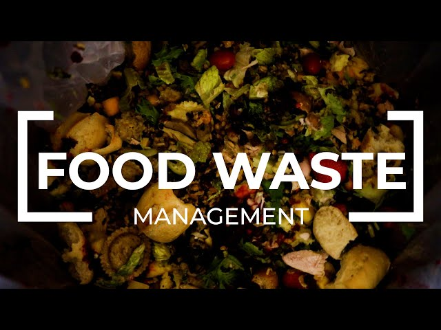

India is one of the largest food producers in the world, yet it also faces a massive food waste problem. According to the Food and Agriculture Organization (FAO), India wastes around 67 million tons of food every year. This waste occurs at various stages, from farm production to household kitchens, and has severe consequences for both the environment and economy.
In India, food waste is often attributed to factors like poor storage infrastructure, lack of awareness, and inefficient distribution systems. Wasted food not only contributes to hunger and malnutrition but also leads to significant greenhouse gas emissions when it ends up in landfills.
If you have excess food that you would like to donate, please fill out the form below. Your generous donations can help reduce food waste and feed people in need.
India has the potential to make a significant impact on food waste reduction by adopting more sustainable practices. These practices focus on minimizing food loss at every stage of the food supply chain, from production to consumption.